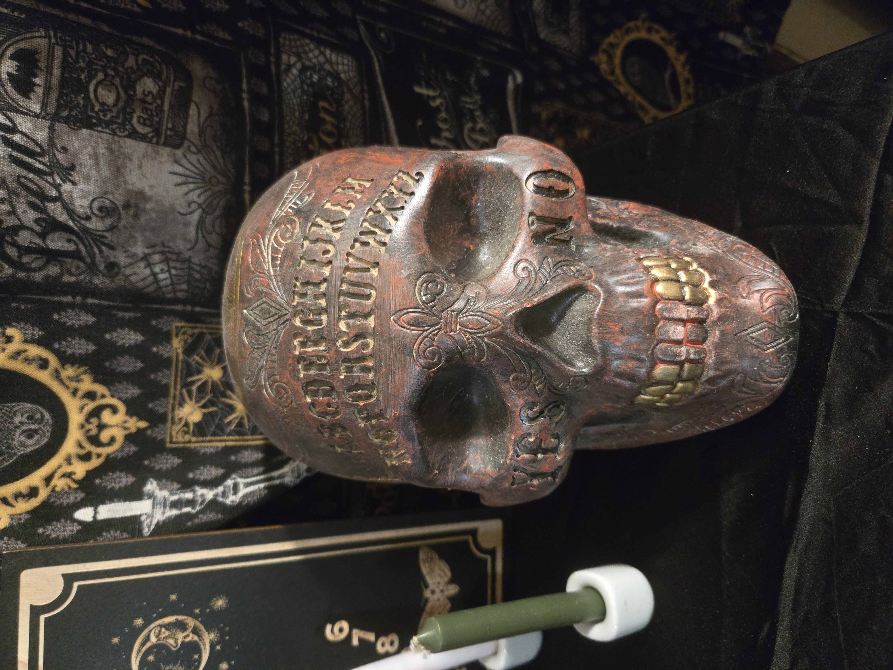
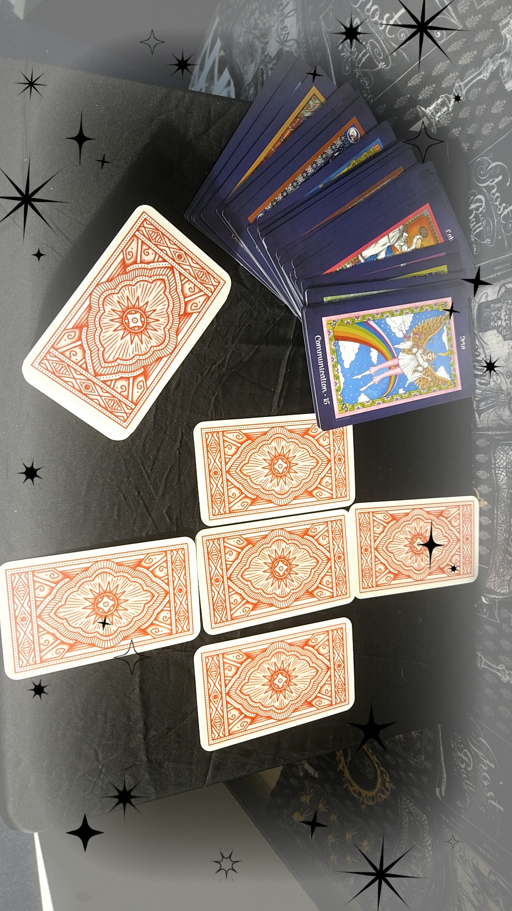

Media Showcase
This page demonstrates the integration of various media formats, curated to match the gothic and enchanted aesthetic of this project.
-
Audio Introduction:
A personal greeting regarding the site's theme.
-
Tarot Visuals:
A short video exploration of tarot elements.
-
Enchanted Animation:
A custom-made animation showcasing witchy elements.

-
Witchy Image Gallery:
A rotating selection of portfolio imagery.



-
Featured Knowledge: Types of Witches
A curated video exploring the various paths of witchcraft.
-
Flickr Creative Portfolio:
View the full high-resolution gallery on my Flickr profile.